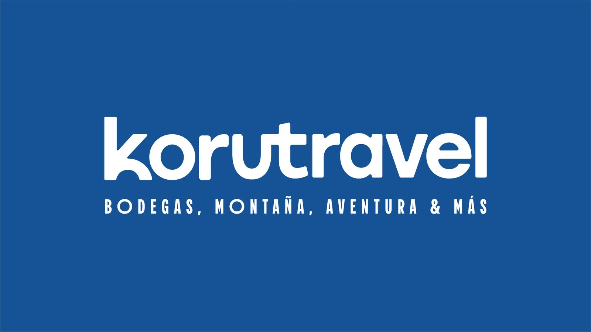
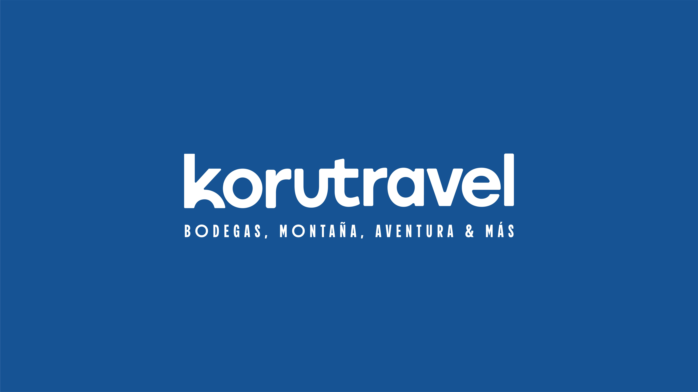
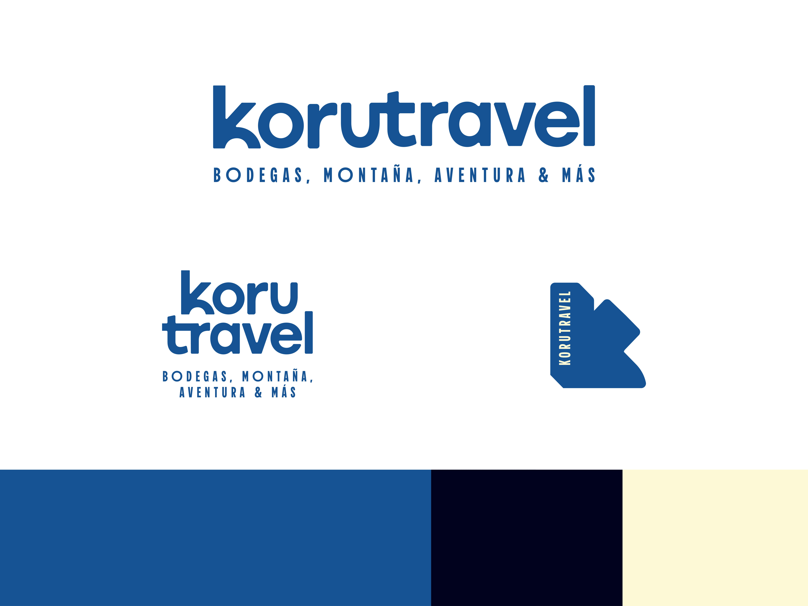
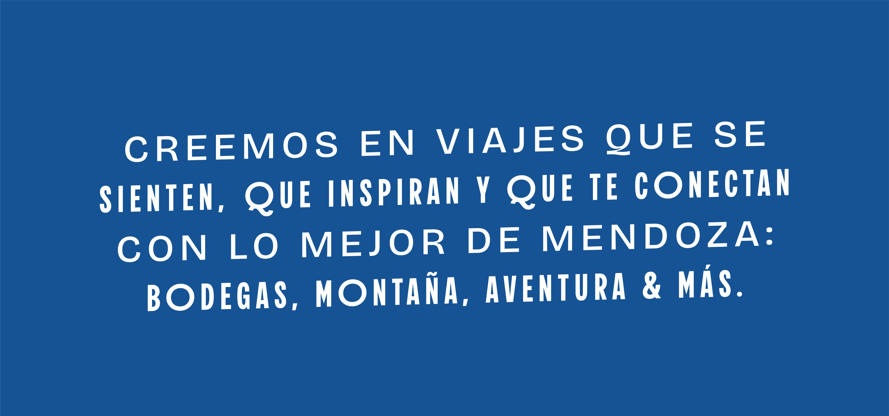
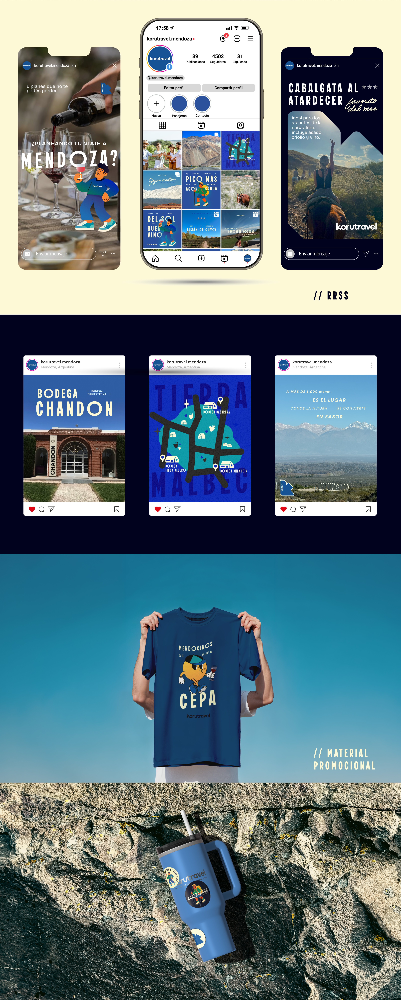
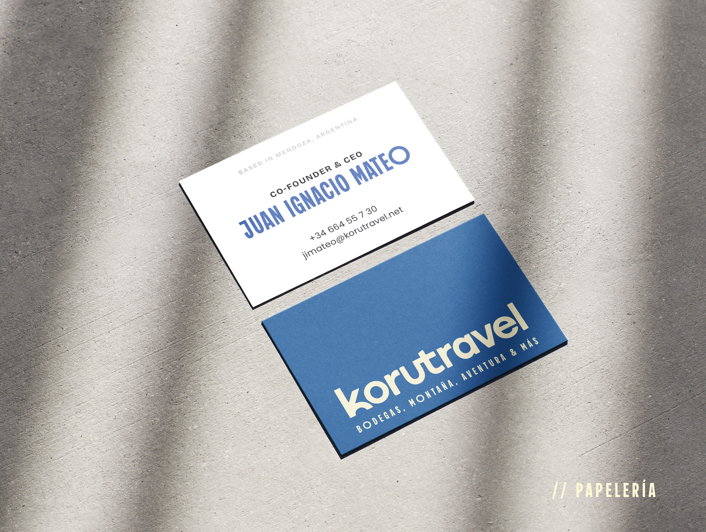
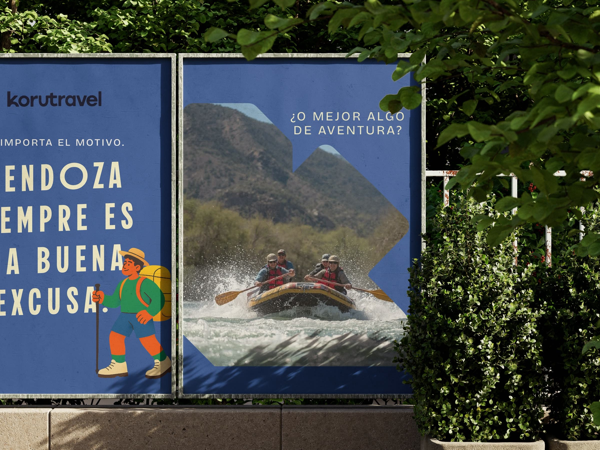
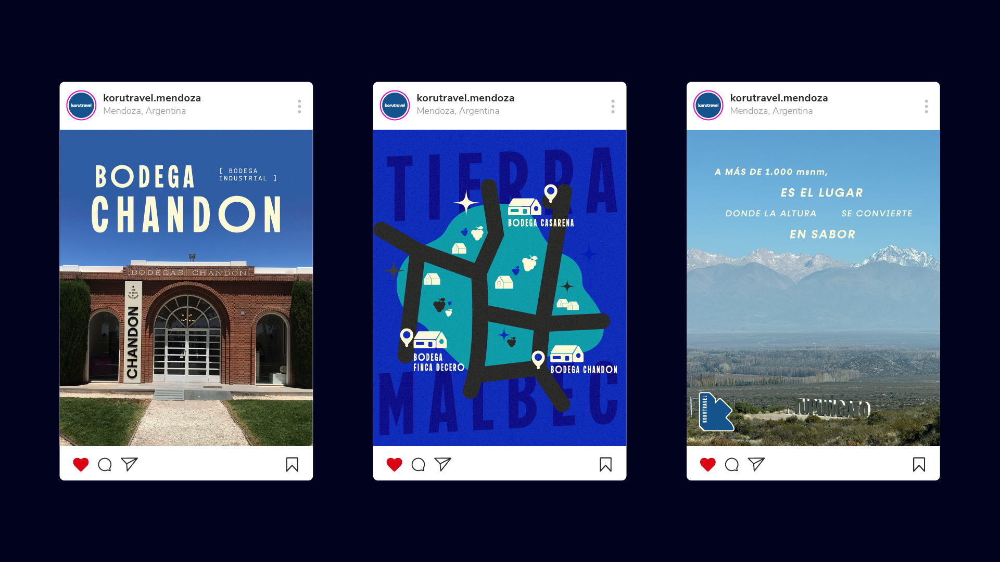

Koru Travel
Cofundé esta agencia de turismo en Mendoza y construí su identidad de marca desde cero. Con estrategia de contenido y campañas en Meta Ads, la comunidad creció a más de 4.500 seguidores, generando entre 70 y 100 leads diarios.

El proyecto
Koru Travel no fue un encargo de cliente: es un proyecto propio que cofundé en 2024 junto a mi socia, una agencia de turismo con base en Mendoza. Desde ese lugar construí la identidad de marca de punta a punta — naming, sistema visual, tono de voz — pero mi rol no terminó en el diseño.
Como cofundadora, también asumí la comunicación y el crecimiento de la marca: definí la estrategia de contenido y llevé adelante las campañas en Meta Ads que sostienen la captación de clientes. Ese trabajo conjunto de identidad y estrategia llevó a la comunidad de Koru Travel a superar los 4.500 seguidores, con un flujo de entre 70 y 100 leads diarios.
Resultados
Proceso

Investigación y naming
Definí los valores que iban a sostener la marca: joven, cercana, auténtica, natural y contemporánea. A partir de ahí construí el naming, el logo y sus variantes (isotipo, versión apilada) y la paleta de color — azul, azul marino y crema — que hoy identifica a Koru Travel en cualquier soporte.

Identidad y estrategia de contenido
Diseñé el sistema visual completo y definí los pilares de contenido de la marca: bodegas & vino, montaña, aventura, diversión y relax. Sobre esa base armé la estrategia de Instagram — grilla, historias destacadas y línea editorial — que hoy sostiene una comunidad de más de 4.500 seguidores.

Campañas y crecimiento
Llevé el sistema de marca a papelería, vía pública y merchandising, y diseñé las campañas en Meta Ads que impulsaron la captación de leads. El resultado: entre 70 y 100 leads diarios generados de forma sostenida.
Imagen destacada

Herramientas
Galería
Piezas del sistema de marca: logo, paleta, tipografía y aplicaciones.




¿Te gustaría algo así para tu marca? Hablemos ↗